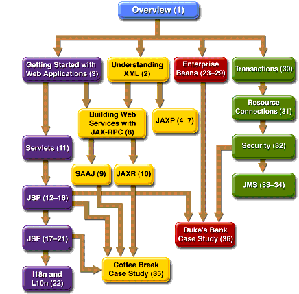

The J2EE
1.4 Tutorial is a guide to developing enterprise applications for the Java 2 Platform, Enterprise Edition (J2EE) version 1.4. Here we cover all the things you need to know to make the best use of this tutorial.
Who Should Use This Tutorial
This tutorial is intended for programmers who are interested in developing and deploying J2EE 1.4 applications on the Sun Java System Application Server Platform Edition 8.2.
Prerequisites
Before proceeding with this tutorial you should have a good knowledge of the Java programming language. A good way to get to that point is to work through all the basic and some of the specialized trails in The Java
How to Read This Tutorial
The J2EE 1.4 platform is quite large, and this tutorial reflects this. However, you don't have to digest everything in it at once.
This tutorial opens with three introductory chapters, which you should read before proceeding to any specific technology area. Chapter 1 covers the J2EE 1.4 platform architecture and APIs along with the Sun Java System Application Server Platform Edition 8.2. Chapters 2 and 3 cover XML basics and getting started with web applications.
When you have digested the basics, you can delve into one or more of the four main technology areas listed next. Because there are dependencies between some of the chapters, Figure 1 contains a roadmap for navigating through the tutorial.
- The Java XML chapters cover the technologies for developing applications that process XML documents and implement web services components:
- The web-tier technology chapters cover the components used in developing the presentation layer of a J2EE or stand-alone web application:
- The Enterprise JavaBeans (EJB) technology chapters cover the components used in developing the business logic of a J2EE application:
- The platform services chapters cover the system services used by all the J2EE component technologies:

Figure 1 Roadmap to This Tutorial
After you have become familiar with some of the technology areas, you are ready to tackle the case studies, which tie together several of the technologies discussed in the tutorial. The Coffee Break Application (Chapter 35) describes an application that uses the web application and web services APIs. The Duke's Bank Application (Chapter 36) describes an application that employs web application technologies and enterprise beans.
Finally, the appendixes contain auxiliary information helpful to the J2EE application developer along with a brief summary of the J2EE Connector architecture:
About the Examples
This section tells you everything you need to know to install, build, and run the examples.
Required Software
Tutorial Bundle
The tutorial example source is contained in the tutorial bundle. If you are viewing this online, you need to download tutorial bundle from:
After you have installed the tutorial bundle, the example source code is in the
<INSTALL>/j2eetutorial14/examples/directory, with subdirectories for each of the technologies discussed in the tutorial.Application Server
The Sun Java System Application Server Platform Edition 8.2 is targeted as the build and runtime environment for the tutorial examples. To build, deploy, and run the examples, you need a copy of the Application Server and the Java 2 Software Development Kit, Standard Edition (J2SE SDK) 1.4.2_06 or higher. If you already have a copy of the J2SE SDK, you can download the Application Server from:
You can also download the J2EE 1.4 SDK--which contains the Application Server and the J2SE SDK--from the same site.
Application Server Installation Tips
In the Admin configuration pane of the Application Server installer,
- Select the Don't Prompt for Admin User Name radio button. This will save the user name and password so that you won't need to provide them when performing administrative operations with
asadminanddeploytool. You will still have to provide the user name and password to log in to the Admin Console.- Note the HTTP port at which the server is installed. This tutorial assumes that you are accepting the default port of 8080. If 8080 is in use during installation and the installer chooses another port or if you decide to change it yourself, you will need to update the common build properties file (described in the next section) and the configuration files for some of the tutorial examples to reflect the correct port.
In the Installation Options pane, check the Add Bin Directory to PATH checkbox so that Application Server scripts (
asadmin,asant,deploytool, andwscompile) override other installations.Registry Server
You need a registry server to run the examples discussed in Chapters 10 and 35. Directions for obtaining and setting up a registry server are provided in those chapters.
Building the Examples
Most of the tutorial examples are distributed with a configuration file for
asant, a portable build tool contained in the Application Server. This tool is an extension of the Ant tool developed by the Apache Software Foundation (http://ant.apache.org). Theasantutility contains additional tasks that invoke the Application Server administration utilityasadmin. Directions for building the examples are provided in each chapter.Build properties and targets common to all the examples are specified in the files
<INSTALL>/j2eetutorial14/examples/common/build.propertiesand<INSTALL>/j2eetutorial14/examples/common/targets.xml. Build properties and targets common to a particular technology are specified in the files<INSTALL>/j2eetutorial14/examples/tech/common/build.propertiesand<INSTALL>/j2eetutorial14/examples/tech/common/targets.xml.To run the
asantscripts, you must set common build properties in the file<INSTALL>/j2eetutorial14/examples/common/build.propertiesas follows:
- Set the
j2ee.homeproperty to the location of your Application Server installation. The build process uses thej2ee.homeproperty to include the libraries in<J2EE_HOME>/lib/in the classpath. All examples that run on the Application Server include the J2EE library archive--<J2EE_HOME>/lib/j2ee.jar--in the build classpath. Some examples use additional libraries in<J2EE_HOME>/lib/and<J2EE_HOME>/lib/endorsed/; the required libraries are enumerated in the individual technology chapters. <J2EE_HOME> refers to the directory where you have installed the Application Server or the J2EE 1.4 SDK.
Note: On Windows, you must escape any backslashes in the
j2ee.homeproperty with another backslash or use forward slashes as a path separator. So, if your Application Server installation isC:\Sun\AppServer, you must setj2ee.homeas follows:j2ee.home = C:\\Sun\\AppServerorj2ee.home=C:/Sun/AppServer
- Set the
j2ee.tutorial.homeproperty to the location of your tutorial. This property is used forasantdeployment and undeployment.For example on Unix:
j2ee.tutorial.home=/home/username/j2eetutorial14On Windows:
j2ee.tutorial.home=C:/j2eetutorial14You should not install the tutorial to a location with spaces in the path.
- If you did not use the default value (
admin)for the admin user, set theadmin.userproperty to the value you specified when you installed the Application Server.- If you did not use port 8080, set the
domain.resources.portproperty to the value specified when you installed the Application Server.- Set the admin user's password in
<INSTALL>/j2eetutorial14/examples/common/admin-password.txtto the value you specified when you installed the Application Server. The format of this file isAS_ADMIN_PASSWORD=password. For example:Tutorial Example Directory Structure
To facilitate iterative development and keep application source separate from compiled files, the source code for the tutorial examples is stored in the following structure under each application directory:
The
asantbuild files (build.xml) distributed with the examples contain targets to create abuildsubdirectory and to copy and compile files into that directory.Further Information
This tutorial includes the basic information that you need to deploy applications on and administer the Application Server.
For reference information on the tools distributed with the Application Server, see the man pages at
http://docs.sun.com/db/doc/817-6092.See the Sun Java
http://docs.sun.com/db/doc/817-6087for information about developer features of the Application Server.See the Sun Java
http://docs.sun.com/db/doc/817-6088for information about administering the Application Server.For information about the Derby database, which is included with Application Server 8.2, and the Pointbase database, which is included with Application Server 8.1, see the following web sites:
How to Buy This Tutorial
This tutorial has been published in the Java Series by Addison-Wesley as The Java Tutorial, Second Edition. For information on the book and links to online booksellers, go to
How to Print This Tutorial
To print this tutorial, follow these steps:
- Ensure that Adobe Acrobat Reader is installed on your system.
- Open the PDF version of this book.
- Click the printer icon in Adobe Acrobat Reader.
Typographical Conventions
Table 2 lists the typographical conventions used in this tutorial.
Menu selections indicated with the right-arrow character
, for example, First
Acknowledgments
The J2EE tutorial team would like to thank the J2EE specification leads: Bill Shannon, Pierre Delisle, Mark Roth, Yutaka Yoshida, Farrukh Najmi, Phil Goodwin, Joseph Fialli, Kate Stout, and Ron Monzillo and the J2EE 1.4 SDK team members: Vivek Nagar, Tony Ng, Qingqing Ouyang, Ken Saks, Jean-Francois Arcand, Jan Luehe, Ryan Lubke, Kathy Walsh, Binod P G, Alejandro Murillo, and Manveen Kaur.
The chapters on custom tags and the Coffee Break and Duke's Bank applications use a template tag library that first appeared in Designing Enterprise Applications with the J2EE
The JavaServer Faces technology and JSP Documents chapters benefited greatly from the invaluable documentation reviews and example code contributions of these engineers: Ed Burns, Justyna Horwat, Roger Kitain, Jan Luehe, Craig McClanahan, Raj Premkumar, Mark Roth, and especially Jayashri Visvanathan.
The OrderApp example application described in the Container-Managed Persistence chapter was coded by Marina Vatkina with contributions from Markus Fuchs, Rochelle Raccah, and Deepa Singh. Ms. Vatkina's JDO/CMP team provided extensive feedback on the tutorial's discussion of CMP.
The security chapter writers are indebted to Raja Perumal, who was a key contributor both to the chapter and to the examples.
Monica Pawlan and Beth Stearns wrote the Overview and J2EE Connector chapters in the first edition of The J2EE Tutorial and much of that content has been carried forward to the current edition.
We are extremely grateful to the many internal and external reviewers who provided feedback on the tutorial. Their feedback helped improve the technical accuracy and presentation of the chapters and eliminate bugs from the examples.
We would like to thank our manager, Alan Sommerer, for his support and steadying influence.
We also thank Duarte Design, Inc., and Zana Vartanian for developing the illustrations in record time. Thanks are also due to our copy editor, Betsy Hardinger, for helping this multi-author project achieve a common style.
Finally, we would like to express our profound appreciation to Ann Sellers, Elizabeth Ryan, and the production team at Addison-Wesley for graciously seeing our large, complicated manuscript to publication.
Feedback
To send comments, broken link reports, errors, suggestions, and questions about this tutorial to the tutorial team, please use the feedback form at
http://java.sun.com/j2ee/1.4/docs/tutorial/information/sendusmail.html.
All of the material in The J2EE(TM) 1.4 Tutorial is copyright-protected and may not be published in other works without express written permission from Sun Microsystems.